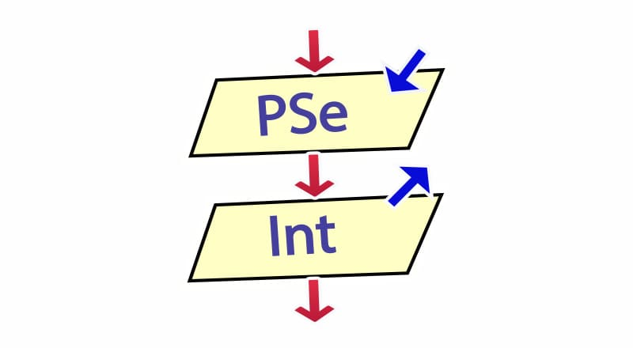
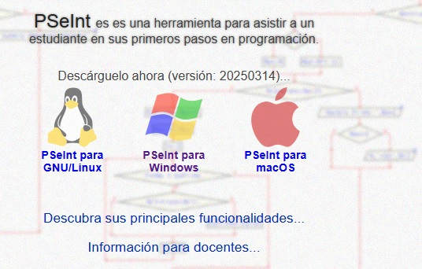
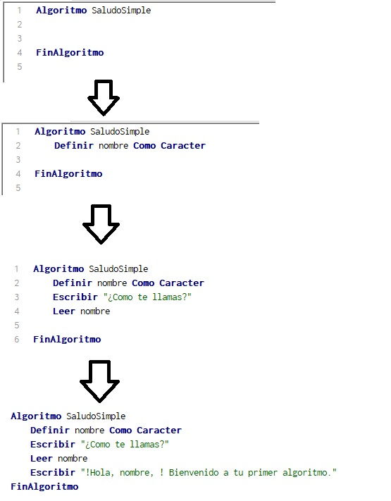
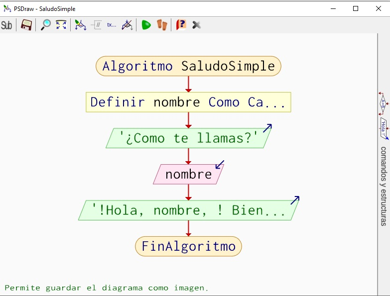
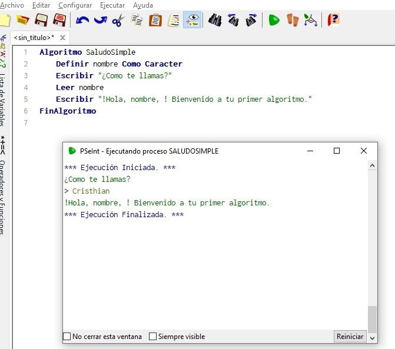
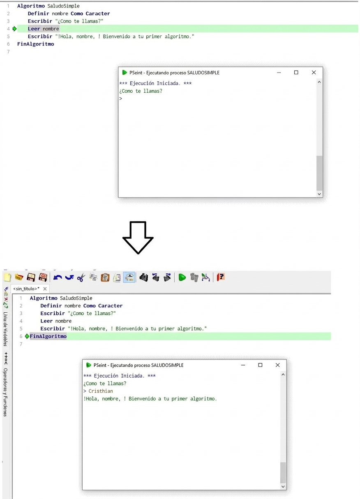
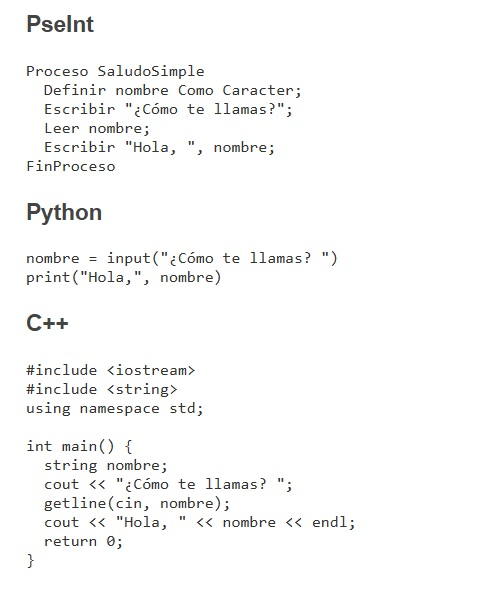

Guía Básica de PseInt
PSeInt sirve para escribir algoritmos en español usando pseudocódigo antes de pasar a un lenguaje de programación como C++, Python, Java, etc.

Puntos importantes que veremos:
- Guía de instalación
- Conociendo la interfaz de PseInt
- Algoritmos
- Diagrama de Flujo
- Pseudocódigo vs. lenguajes reales
- Glosario
- Biblioteca
1. Guía de instalación
Descargar el programa (eligiendo el sistema operativo correcto)
Entra al sitio oficial de PseInt y descarga el instalador correspondiente a tu sistema operativo sea Windows, Linux o MacOS.

2. Conociendo la interfaz de PseInt
Al abrir PseInt verás tres zonas principales:
| Editor de código (centro): | Panel de comandos (derecha): | Consola de ejecución (ventana emergente al ejecutar): |
|---|---|---|
| Donde escribes tu algoritmo | Atajos rápidos para insertar estructuras como | Muestra los mensajes en pantalla y te permite ingresar datos por teclado. |
| Proceso ... FinProceso | Escribir, Leer, Asignar, Si-Entonces, Mientras o Para. | Se muestra el resultado del algoritmo creado, sea calculadora, alguna fórmula, etc. |
3. Primer Algoritmo
Para comenzar con nuestro primer algoritmo crearemos un pseudocódigo que pida un nombre de usuario y salude:
Nombra el pseudocódigo
En la primera línea reemplaza el sin_titulo por un nombre descriptivo por ejemplo SaludoSimple.
Define variables:
Usa Definir para indicar qué tipo de dato guardarás (Caracter, Entero, Real, Logico).
Muestra y lee datos:
Usa Escribir para mostrar un mensaje y Leer para capturar lo que escriba el usuario.

4. Diagrama de Flujo
Un diagrama de flujo es la representación gráfica de un algoritmo mediante figuras geométricas conectadas por flechas que indican el orden de ejecución y el sentido del flujo lógico. Traduce las instrucciones escritas en pseudocódigo (como Escribir, Leer, asignaciones, condicionales o bucles) a un mapa visual donde es más fácil seguir cómo se transforman los datos y dónde se toman decisiones.
Diagrama de flujo (F7 o ícono de diagrama):
Genera automáticamente el diagrama de flujo de tu algoritmo, ideal para visualizar condicionales y bucles.

Ejecutar (F9 o botón verde de Play):
Abre la ventana de ejecución. Escribe tu nombre y presiona Enter para ver el resultado. Si hay un error de sintaxis, PSeInt marcará la línea con un mensaje explicativo.

Ejecutar paso a paso (F8):
Avanza instrucción por instrucción para observar cómo cambia el flujo y revisar el valor de las variables.

5. Pseudocódigo vs. lenguajes reales
El pseudocódigo de PseInt es el paso previo a programar en un lenguaje real. La lógica es la misma, solo cambia la forma de escribirla (la sintaxis).
Equivalencias básicas
| Acción | PseInt | Python | C++ |
|---|---|---|---|
| Mostrar en pantalla | Escribir | print() | cout << |
| Leer datos | Leer | input() | cin >> |
| Asignar un valor | <- (o =) | = | = |
| Condicional | Si - Entonces - SiNo - FinSi | if - else | if - else |
| Repetir con contador | Para - FinPara | for | for |
| Repetir con condición | Mientras - FinMientras | while | while |
| Fin de instrucción | ; | Salto de línea | ; |
Ejemplo: el mismo saludo en tres lenguajes
Este es el algoritmo de la sección 3 escrito en PseInt, Python y C++.

5. Biblioteca de enlaces
Acá habrá variedad de enlaces para que te puedas seguir informando sobre PseInt.
Guía de PseInt
Acá podrás visualizar un PDF con una guía de este lenguaje de pseudocódigo para que puedas alimentar tu conocimiento.
Enlaces de canales donde los creadores de contenido te harán entender el pseudocódigo de manera didáctica.
Aprende PseInt desde cero con el creador de contenido "Danisable".
CURSO de LÓGICA de PROGRAMACIÓN con PSEINT con el creador de contenido "DacarSoft".